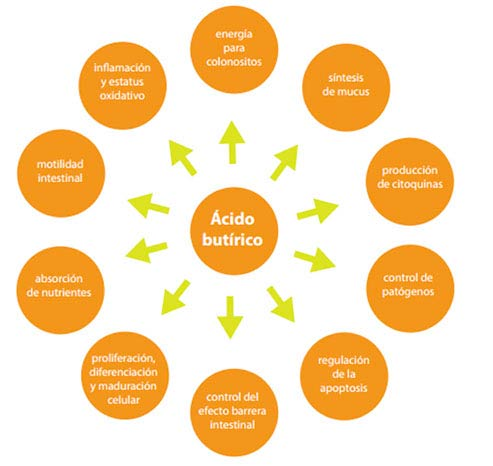
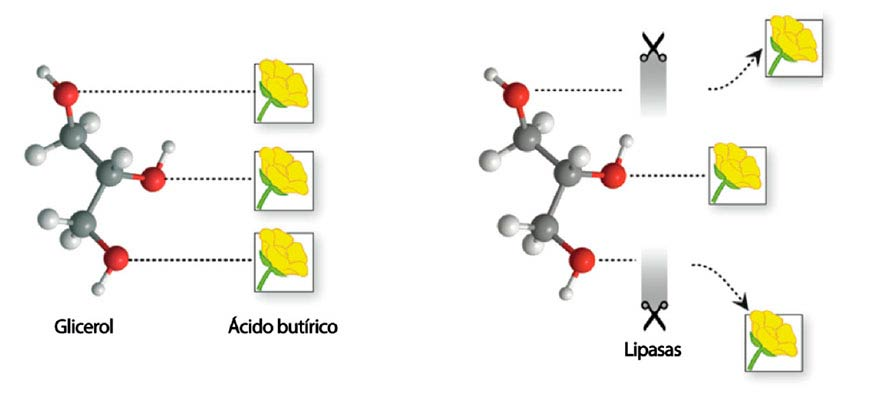

Dentro del mundo de los aditivos para alimento balanceado (ABA), cada vez es mayor la atención prestada a aquellos que mejoran la inmuno-competencia, principalmente a nivel intestinal. Es por ello, que los avances tecnológicos en nutrición animal han conducido a los expertos a desarrollar nuevas moléculas que permitan proveer a través del alimento balanceado promotores de crecimiento como los ácidos orgánicos, los cuales son ácidos grasos de cadena corta que juegan un papel importante en la homeostasis intestinal y son un vínculo vital entre la microbiota y la inmunidad, así como también, ofrecer una manera de resistir o limitar los efectos de una infección causada por bacterias gram negativas como Salmonella (Wielsma. 2016).
En esta revisión haremos especial referencia al ácido butírico. Actualmente a través de las mejoras tecnológicas se desarrolló una nueva molécula para suministrarlo de forma segura y más agradable para los operarios, sin afectar sus beneficios aportados, tales como, las mejoras en la salud animal, especialmente a nivel inmunitario, gastrointestinal como las mejoras en la morfología intestinal (Hou et al., 2014), digestibilidad y absorción de los nutrientes, pero disminuyendo los inconvenientes que se presentan en el manejo del ácido butírico a nivel de planta (olor excesivo que dificulta enormemente y hace desagradable el uso en las fábricas de alimento).
El ácido butírico es un ácido orgánico de cadena corta que se encuentra de forma natural en el tracto digestivo y tiene un efecto positivo demostrado sobre la salud intestinal y a nivel productivo, esto ya que, al igual que otros ácidos orgánicos tiene la capacidad de modular las poblaciones de entero-bacterias favoreciendo el predominio de las especies saprofitas sobre las bacterias entero-patógenas, razón por la cual se convierte en un factor de estabilidad y optimización el proceso digestivo, gracias a la capacidad de influir de forma positiva sobre el control de entero-patógenos y la protección/desarrollo de la mucosa intestinal. A su vez Wielsma (2015), menciona que en animales más jóvenes tienen una microbiota menos diversificada y las bacterias que producen el ácido son escasas aumenta la resistencia a agresiones externas (mecánicas y bacterianas) y juega un papel importante en la reparación de las lesiones intestinales (Hou et al., 2014).
Su modo de acción es múltiple y sus beneficios han sido ampliamente estudiados a lo largo de los años (aproximadamente hace más de 20 años) Se ha demostrado que el ácido butírico aumenta la proliferación de las células intestinales normales e inhibe el crecimiento de las células anormales en el epitelio intestinal que es una de las barreras defensivas importantes en la inmunidad innata. Guilloteau et al. (2010) resume sus efectos a nivel intestinal en la
Figura 1:
Figura 1. Múltiples Efectos Locales del Ácido Butírico en el Intestino.
• Acido butírico en forma de sales (sódicas o cálcicas), pero la capacidad de estas sales para contrarrestar los problemas antes mencionados es limitada, debido a que, para que un recubrimiento sea óptimo debe suponer un 70% del peso total del producto comercial, por lo que solo un 30% es un ingrediente activo.
• Sales protegidas, consiste en envolver el principio activo (sal de ácido butírico) en grasas, este método de protección siempre y cuando el proceso de recubrimiento sea adecuado, puede alcanzar un producto final manejable para las fábricas de ABA y con capacidad de alcanzar el intestino de los animales.
• En busca de alcanzar un producto final con mayor eficiencia se desarrolló la nueva generación de los productos que aportan ácido butírico, dando origen a los ésteres de ácido butírico, mejor conocidas como Tributirinas. Las Tributirinas: son una forma esterificada de butirina que combina la molécula de butirato con glicerol, a cada glicerol se pueden unir hasta 3 moléculas de ácido butírico, dando origen a las Tributirinas que pueden llegar a aportar el doble de ácido butírico de las sales protegidas.
Las Tributirinas al ser consideradas como triglicéridos, son moléculas muy estables frente al pH, temperatura y humedad y por tanto su estabilidad permanece durante el proceso de fabricación del ABA, mientras que el enlace entre la molécula de butirato y glicerol aporta resistencia al proceso digestivo a nivel del estómago y pasan a nivel del intestino delgado donde son disociadas por la acción de las lipasas pancreáticas, liberando el ácido butírico y glicerol en el intestino para ser absorbidos.
Figura 2. Representación esquemática de una molécula de Tributirina y su disociación por acción de las lipasas.

Los efectos atribuidos a las Tributirinas en la industria de ABA incluyen:
• Mejor digestibilidad de nutrientes que resulta en un aumento en la productividad.
• Estimulación de la secreción de enzimas digestivas.
• Optimización de la microbiota intestinal y mejora de la integridad epitelial y de los sistemas de defensa.
• Desarrollo del tejido y reparación del tracto digestivo.
• Regulación de la virulencia bacteriana.
• Control de trastornos de la salud intestinal causados por patógenos bacterianos, especialmente en animales jóvenes.
La suplementación con el ácido butírico a nivel de productividad animal ha sido evaluada a lo través de los años, reportándose beneficios como:
Dietas suplementadas mejoran la tasa de crecimiento y conversión de alimento en los lechones (Le Gall et al., 2009; Hou et al., 2014) antes y durante el destete, así mismo, se encontró un aumento en la densidad de células parietales gástricas, lo que sugiere un aumento en la secreción de ácido gástrico (Manzonni et al. 2008). Resultados similares se encontraron en becerros (Gorka et al., 2009; Guilloteau et al., 2009) antes del destete, mientras que, posterior al destete en los becerros alimentados con dietas a base de proteína de soya, se observó mejoras en la digestibilidad de materia seca cuando se suplementan con ácido butírico (Guilloteau et al., 2009).
La digestibilidad de los nutrientes también es mejorada en los animales monogástricos, en el caso de lechones se ha observado mejoras en la digestibilidad de la fibra (Hou et al, 2014), y en los pollos de engorde la digestibilidad de otros nutrientes como proteína y energía (Peng et al., 2013).
En cuanto a los beneficios productivos, Estudios realizados en el IRTA, España (2012) en pollos de engorde muestran que la eficiencia alimentaria durante todo el ciclo se redujo 3 puntos y el índice de eficiencia europea aumentó cuando las aves fueron suplementadas (350 Vs 342, aves suplementadas Vs control, respectivamente). Así mismo, investigaciones realizadas en gallinas ponedoras, reflejaron mejoras en el porcentaje de postura durante el pico de producción, con una notable reducción de huevos sucios y rotos.
A nivel de salud y resistencia de la mucosa intestinal, se ha demostrado reducción de las lesiones intestinales y del stress oxidativo, junto con una mayor recuperación de la mucosa intestinal en lechones desafiados (British Journal of Nutrition, 2014). En pollos de engorde, reducción de las lesiones intestinales desafiados con Eimeria (Ridgeway Research, 2013) y mejora en la longitud de las vellosidades del intestino delgado a los 10 días de edad, longitud de las vellosidades aumentó un 47% en el duodeno y un 23% en el yeyuno de las aves que recibieron Tributirinas con respecto al control (República Checa, 2012).
Son diversos y amplios los beneficios que reportados en la literatura de los efectos positivos del ácido butírico en la alimentación animal. Sin embargo, actualmente las Tributirinas representan la más reciente y eficiente opción desarrollada a través de la tecnología, para aportar ácido butírico y todos los beneficios que este ofrece a los animales, sin los inconvenientes de concentraciones y mal olor que dificultan la incorporación en el alimento balanceado cuando se usa ácido butírico en otras presentaciones.